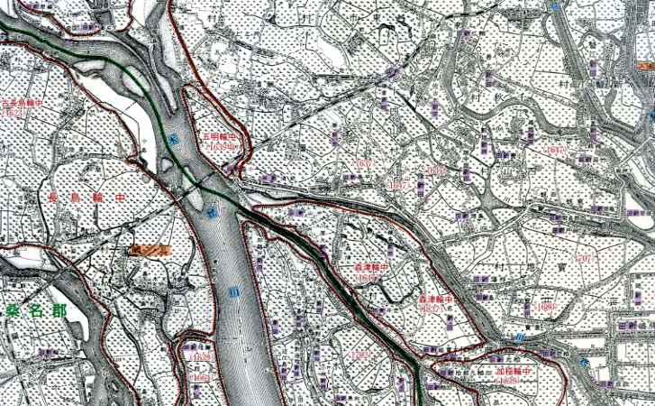
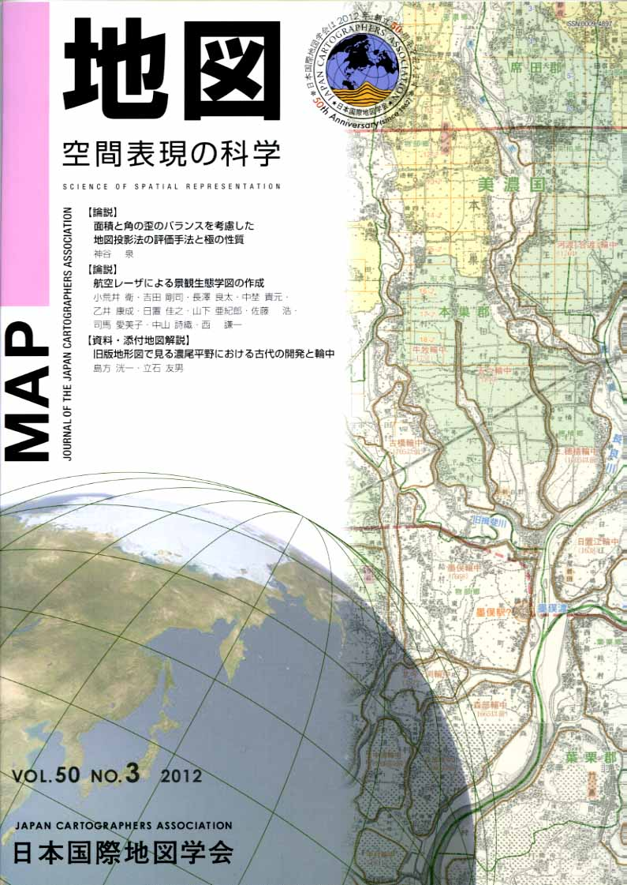
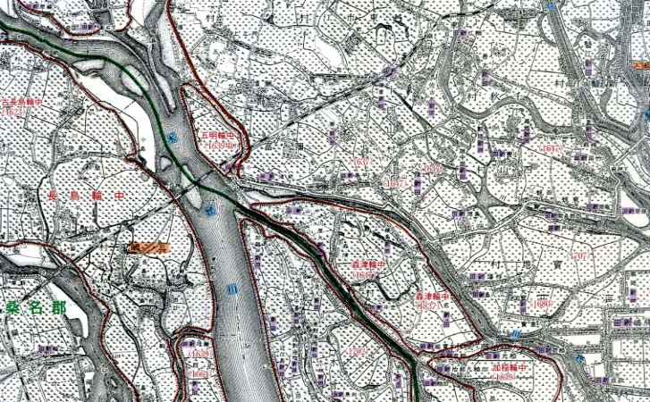

≪No.50 No.3 添付地図≫


本図を許可なく複製・利用することを禁止します。
| 最 新 号 | バックナンバー | 添付地図目録 | 投 稿 規 程 |
Vol.50 No.３ （通巻１９９号） ２０１２年
| 【論説】 | 面積と角の歪のバランスを考慮した地図投影法の評価手法と極の性質 | 神谷 泉 |
| キーワード：地図投影法、歪、評価、極、歪のオーダー評価 | ||
| 【論説】 | 航空レーザによる景観生態学図の作成 | 小荒井衛・吉田剛司・長澤良太・中埜貴元・乙井康成・日置佳之・山下亜紀郎・佐藤 浩・司馬愛美子・中山詩織・西 謙一 |
| キーワード：景観生態学、景観生態学図、航空レーザ、知床半島、中国山地 | ||
| 【資料・添付地図解説】 | 旧版地形図で見る濃尾平野における古代の開発と輪中 | 島方洸一・立石友男 |
| キーワード：旧版地形図、濃尾平野、条里地割、古代駅路、輪中 | ||
| 【定期大会】 | 平成24年度定期大会実施報告 | 佐藤 潤・中村康子・伊藤 等・鎌田高造・今井健三・大島英幹・亀井啓一郎 |
| 【書評・紹介】 | 思考力が育つ地図＆地球儀の活用 | 田部俊充 |
| 【特別会員名簿】 | ||
| 【リレーメッセージ：地図・地図学への思い】 | ハザードマップに思う | 大竹一彦 |
| 【学会記事】 | ||
| 【添付地図】 | 旧版地形図で見る濃尾平野における古代の開発と輪中 | |
|
≪No.50 No.3 表紙≫ |
|
|  |
|
|
|
≪No.50 No.3 添付地図≫ |
|
 本図を許可なく複製・利用することを禁止します。
|